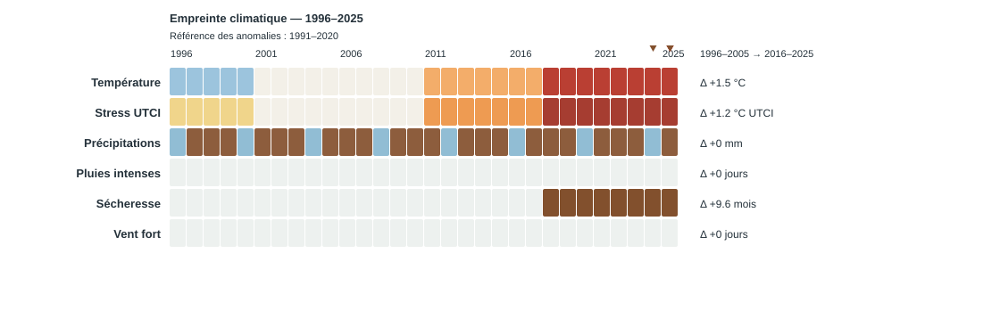

Empreinte climatique — aperçu
Données fictives. Cette page sert uniquement à valider la lecture et le rendu. Elle ne représente aucun lieu réel.

Les données structurées correspondantes sont disponibles dans climate-fingerprint.json.
Données fictives. Cette page sert uniquement à valider la lecture et le rendu. Elle ne représente aucun lieu réel.

Les données structurées correspondantes sont disponibles dans climate-fingerprint.json.